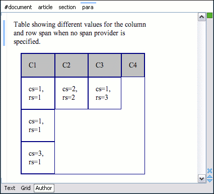
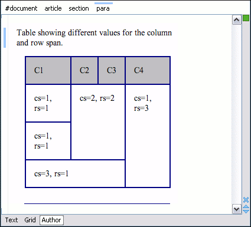

In a custom framework, the
<table> element can have cells that span over multiple columns and
rows. As explained in Configuring Tables,
you need to indicate Oxygen XML Editor a method to determine the cell spanning. If you
use the @rowspan and @colspan attributes, Oxygen XML Editor can determine the cell spanning automatically. In the following
example, the <td> element uses the @row_span and
@column_span attributes that are not recognized by default. You will need
to implement a Java extension class for defining the cell spanning.
The init method takes ro.sync.ecss.extensions.api.node.AuthorElement that represents the XML
<table> element as its argument. In this example, the cell span is
specified for each of the cells so you leave this method empty. However, there are cases
(such as the CALS table model) when the cell spanning is specified in the
<table> element. In such cases, you must collect the span information by
analyzing the <table> element.
publicvoid init(AuthorElement table) {
}
The getColSpan method is taking as argument the table cell. The table layout
engine will ask this AuthorTableSpanSupport implementation what is the column span
and the row span for each XML element from the table that was marked as cell in the CSS
using the property display:table-cell. The implementation is simple and
just parses the value of column_span attribute. The method must return
null for all the cells that do not change the span specification.
public Integer getColSpan(AuthorElement cell) {
Integer colSpan = null;
AttrValue attrValue = cell.getAttribute("column_span");
if(attrValue != null) {
// The attribute was found.
String cs = attrValue.getValue();
if(cs != null) {
try {
colSpan = new Integer(cs);
} catch (NumberFormatException ex) {
// The attribute value was not a number.
}
}
}
return colSpan;
}
The row span is determined in a similar manner:
public Integer getRowSpan(AuthorElement cell) {
Integer rowSpan = null;
AttrValue attrValue = cell.getAttribute("row_span");
if(attrValue != null) {
// The attribute was found.
String rs = attrValue.getValue();
if(rs != null) {
try {
rowSpan = new Integer(rs);
} catch (NumberFormatException ex) {
// The attribute value was not a number.
}
}
}
return rowSpan;
}
Note: The complete source code for framework customization
examples can be found in the oxygen-sample-framework module of the Oxygen
SDK, available as a Maven archetype on the Oxygen XML Editor website.
In the listing below, the XML document contains the table element:
When no table cell span provider is specified, the table has the following layout:
Figure 1. Table layout when no cell span provider is specified

When the above implementation is configured, the table has the correct layout:
Figure 2. Cells spanning multiple rows and columns.

Note: The complete source code for framework customization
examples can be found in the oxygen-sample-framework module of the Oxygen
SDK, available as a Maven archetype on the Oxygen XML Editor website.